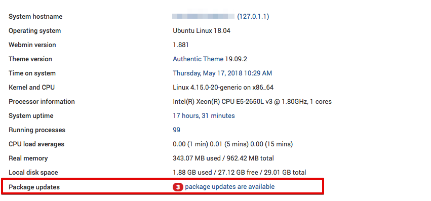

Установка Webmin в Ubuntu 18.04
Published on January 7, 2020
By Theo B
Автор выбрал Tech Education Fund для получения пожертвования в размере $100 в рамках программы Write for DOnations.
Webmin — это сетевая панель управления для любого компьютера с Linux, которая позволяет вам управлять сервером через современный веб-интерфейс. С помощью Webmin вы можете изменить настройки для стандартных пакетов на ходу, включая веб-серверы и базы данных, а также управлять пользователями, группами и пакетами программного обеспечения.
В этом обучающем модуле вы установите и настроите Webmin на вашем сервере и обеспечить безопасность доступа к интерфейсу с действительным сертификатом, используя Let’s Encrypt и Apache. Затем вы воспользуетесь Webmin для добавления новых аккаунтов пользователя и обновления всех пакетов на вашем сервере с панели управления.
Для данного обучающего руководства вам потребуется следующее:
Шаг 1 — Установка Webmin
Сначала нам нужно добавить репозиторий Webmin, чтобы мы могли установить и обновить Webmin с помощью менеджера пакетов. Для этого мы добавим репозиторий в файл /etc/apt/sources.list.
Откройте в файл в своем редакторе:
Copy
Затем добавьте следующую строку внизу файла, чтобы добавить новый репозиторий:
/etc/apt/sources.list
. . .
deb http://download.webmin.com/download/repository sarge contrib
Сохраните файл и выйдите из редактора.
Затем добавьте ключ Webmin PGP, чтобы у системы было доверие к новому репозиторию:
Copy
Затем обновите список пакетов, чтобы включить репозиторий Webmin:
Copy
Установите Webmin:
Copy
После завершения установки вы увидите следующий вывод:
OutputWebmin install complete. You can now login to
https://your_server_ip:10000 as root with your
root password, or as any user who can use `sudo`.
Теперь нужно обеспечить безопасность доступа к Webmin, поместив его на веб-сервер Apache и добавив действительный сертификат TLS/SSL.
Шаг 2 — Защита Webmin с помощью Apache и Let’s Encrypt
Чтобы получить доступ к Webmin, вы должны указать порт 10000 и убедиться, что порт открыт в брандмауэре. Это неудобно, особенно если вы получаете доступ к Webmin с помощью FQDN, например webmin.your_domain. Мы будем использовать виртуальный хост Apache для прокси-запросов к серверу Webmin, использующему порт 10000. Затем нам нужно будет защитить виртуальный хост, используя сертификат TLS/SSL от Let’s Encrypt.
Создайте файл нового виртуального хоста Apache в директории конфигурации Apache:
sudo nano /etc/apache2/sites-available/your_domain.conf
Copy
Добавьте в файл следующие данные, заменив адрес электронной почты и домен на ваши собственные:
/etc/apache2/sites-available/your_domain.conf
<VirtualHost *:80>
ServerAdmin your_email
ServerName your_domain
ProxyPass / http://localhost:10000/
ProxyPassReverse / http://localhost:10000/
</VirtualHost>
Эта конфигурация позволяет Apache передавать запросы по адресу http://localhost:10000, на сервер Webmin. Она также гарантирует, что внутренние ссылки, созданные с помощью Webmin, также будут обрабатываться через Apache.
Сохраните файл и выйдите из редактора.
Теперь нам нужно попросить Webmin прекратить использование TLS/SSL, поскольку Apache будет делать это за нас.
Откройте в своем редакторе файл /etc/webmin/miniserv.conf:
Copy
Найдите следующую строку:
/etc/webmin/miniserv.conf
...
ssl=1
...
Измените 1 на 0. Это сообщит Webmin, что нужно прекратить использование SSL.
Затем мы добавим наш домен в список разрешенных доменов, чтобы Webmin не рассматривал вход в панель с нашего домена как действия злоумышленника, например, атака с использованием межсайтовых сценариев.
Откройте в своем редакторе файл /etc/webmin/config:
Copy
Добавьте внизу файла следующую строку, заменив your_domain на ваше полное доменное имя.
/etc/webmin/config
. . .
referers=your_domain
Сохраните файл и выйдите из редактора.
Затем перезапустите Webmin, чтобы применить изменения конфигурации:
Copy
Активируйте модуль Apache proxy_http:
Copy
Вывод должен выглядеть так:
OutputConsidering dependency proxy for proxy_http:
Enabling module proxy.
Enabling module proxy_http.
To activate the new configuration, you need to run:
systemctl restart apache2
Вывод рекомендует перезапустить Apache, но сначала необходимо активировать новый виртуальный хост Apache, который вы создали:
Copy
Вы увидите следующий вывод, указывающий, что ваш сайт активирован:
OutputEnabling site your_domain.
To activate the new configuration, you need to run:
systemctl reload apache2
Перезапустите Apache, чтобы активировать модуль proxy_http и новый виртуальный хост:
Copy
Примечание. Убедитесь, что вы разрешили прием входящего трафика для вашего веб-сервера на через порт 80 и порт 443, как описано в разделе предварительных условий руководства Установка стека Linux, Apache, MySQL, PHP (LAMP) в Ubuntu 18.04. Вы можете сделать это с помощью команды sudo ufw allow в Apache Full.
Перейдите по адресу http://your_domain в браузере, в результате чего вы должны увидеть страницу входа Webmin.
Предупреждение. НЕ нужно выполнять вход в Webmin, поскольку мы еще не активировали SSL. Если вы выполните вход сейчас, ваши учетные данные будут отправлены на сервер в виде простого текста.
Теперь нам нужно настроить сертификат, чтобы ваша подключение было зашифровано при использовании Webmin. Для этого мы будем использовать Let’s Encrypt.
Попросите Certbot создать сертификат TLS/SSL для вашего домена и настроить Apache для перенаправления трафика на защищенный сайт:
Copy
Вывод должен выглядеть следующим образом:
OutputSaving debug log to /var/log/letsencrypt/letsencrypt.log
Plugins selected: Authenticator apache, Installer apache
Obtaining a new certificate
Performing the following challenges:
http-01 challenge for your_domain
Enabled Apache rewrite module
Waiting for verification...
Cleaning up challenges
Created an SSL vhost at /etc/apache2/sites-available/your_domain-le-ssl.conf
Enabled Apache socache_shmcb module
Enabled Apache ssl module
Deploying Certificate to VirtualHost /etc/apache2/sites-available/your_domain-le-ssl.conf
Enabling available site: /etc/apache2/sites-available/your_domain-le-ssl.conf
Enabled Apache rewrite module
Redirecting vhost in /etc/apache2/sites-enabled/your_domain.conf to ssl vhost in /etc/apache2/sites-available/your_domain-le-ssl.conf
-------------------------------------------------------------------------------
Congratulations! You have successfully enabled https://your_domain
You should test your configuration at:
https://www.ssllabs.com/ssltest/analyze.html?d=your_domain
-------------------------------------------------------------------------------
Данный вывод показывает, что сертификат был установлен, а Apache настроен для перенаправления запросов с http://your_domain на https://your_domain.
Вы установили защищенный рабочий экземпляр Webmin. Давайте узнаем, ка его использовать.
Шаг 3 — Использование Webmin
Webmin содержит модули, которые могут контролировать все, начиная с сервера BIND DNS и заканчивая такими простыми действиями, как добавление пользователей в систему. Давайте посмотрим, как создать нового пользователя, а затем узнаем, как обновить пакеты программного обеспечения с помощью Webmin.
Для входа в Webmin перейдите по адресу http://your_domain и выполните вход с помощью пользователя root или пользователя с привилегиями sudo.
Управление пользователями и группами
Давайте организуем управление пользователями и группами на сервере.
Сначала нажмите вкладку System, а затем нажмите кнопку Users and Groups. Отсюда вы можете добавить пользователя, управлять пользователем или добавить и управлять группой.
Давайте создадим нового пользователя с именем deploy, который может использоваться для хостинга веб-приложений. Чтобы добавить пользователя, нажмите кнопку Create a new user, которая расположена в верхней части таблицы пользователей. В результате отображается экран Create User, где вы можете указать имя пользователя, пароль, группы и другие параметры. Следуйте этим инструкциям для создания пользователя:
При создании пользователя вы можете установить параметры для истечения действия пароля, командной строки пользователя и разрешения на использование домашней директории.
Теперь давайте посмотрим, как установить обновления для нашей системы.
Webmin позволит вам обновлять все ваши пакеты через пользовательский интерфейс. Чтобы обновить все ваши пакеты, нажмите ссылку Dashboard, а затем найдите поле Package updates. Если есть доступные обновления, вы увидите ссылку, которая указывает количество доступных обновлений, как показано на следующем изображении:

Нажмите эту ссылку, а затем нажмите Update selected packages для запуска обновления. Вам может быть предложено перезагрузить сервер, что вы также можете сделать через интерфейс Webmin.
Теперь у вас есть защищенный рабочий экземпляр Webmin и вы научились использовать интерфейс для создания пользователя и обновления пакетов. Webmin позволяет вам получить доступ ко многим функциям, которые, как правило, доступны через консоль, а его работа организована интуитивно понятным образом. Например, если вы установили Apache, вы можете найти для него вкладку конфигурации в разделе Servers, а затем Apache.
Продолжайте изучение интерфейса или ознакомьтесь с официальной вики-справочником Webmin, чтобы узнать больше об управлении системой с помощью Webmin.
Thanks for learning with the DigitalOcean Community. Check out our offerings for compute, storage, networking, and managed databases.